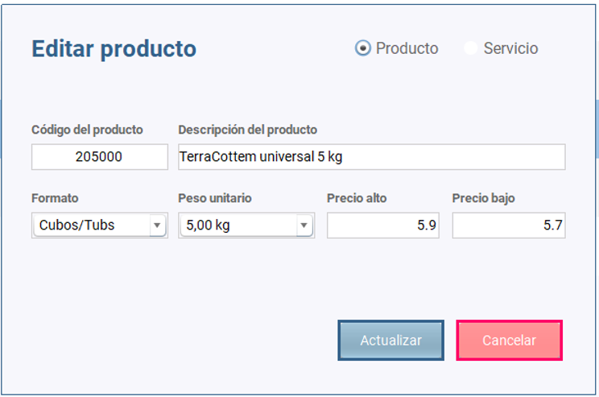

Una vez que hacemos clic en Productos/Productos-Servicios se abre el escritorio de productos y servicios.
Podemos observar una tabla con todos los productos y servicios creados y tres botones: uno para añadir más productos o servicios, uno para editarlos y otro para eliminarlos.
El botón "NUEVO PRODUCTO" hace que se abra un diálogo en el que insertaremos la información relevante del producto o servicio. Es necesario añadir toda la información.
Podemos observar que el diálogo muestra un botón para añadir un producto o un servicio.
El botón "EDITAR" hace que se abra un diálogo en el que podremos modificar lo que sea necesario del producto o del servicio.
Para ello antes es necesario seleccionar la fila en la que se encuentra el producto o servicio que queremos editar.
Nótese que si estamos editando un producto el botón de selección de servicio se deshabilita y viceversa.

El botón "ELIMINAR" hace que se elimine el producto o servicio seleccionado de la tabla previa advertencia de seguridad por si finalmente no queremos hacerlo.
Para ello antes es necesario seleccionar la fila en la que se encuentra el producto o servicio que queremos eliminar
El botón "BUSCAR" nos permite buscar los productos o servicios que están en la base de datos. La búsqueda podemos hacerla:
Únicamente es necesario introducir algunos caracteres y pulsar en el botón "BUSCAR" para que lo encuentre sin problemas.